One of the most challenging activities in computer vision is the extraction of useful information from a given image. Such information, usually comes in the form of points that preserve some kind of property (for instance, they are scale-invariant) and are actually representative of input image.
The goal of this module is seeking a new kind of representative information inside an image and providing the functionalities for its extraction and representation. In particular, differently from previous methods for detection of relevant elements inside an image, lines are extracted in place of points; a new class is defined ad hoc to summarize a line’s properties, for reuse and plotting purposes.
As aformentioned, it is been necessary to design a class that fully stores the information needed to characterize completely a line and plot it on image it was extracted from, when required.
KeyLine class has been created for such goal; it is mainly inspired to Feature2d’s KeyPoint class, since KeyLine shares some of KeyPoint‘s fields, even if a part of them assumes a different meaning, when speaking about lines. In particular:
Apart from fields inspired to KeyPoint class, KeyLines stores information about extremes of line in original image and in octave it was extracted from, about line’s length and number of pixels it covers. Code relative to KeyLine class is reported in the following snippet:
class CV_EXPORTS_W KeyLine
{
public:
/* orientation of the line */
float angle;
/* object ID, that can be used to cluster keylines by the line they represent */
int class_id;
/* octave (pyramid layer), from which the keyline has been extracted */
int octave;
/* coordinates of the middlepoint */
Point pt;
/* the response, by which the strongest keylines have been selected.
It's represented by the ratio between line's length and maximum between
image's width and height */
float response;
/* minimum area containing line */
float size;
/* lines's extremes in original image */
float startPointX;
float startPointY;
float endPointX;
float endPointY;
/* line's extremes in image it was extracted from */
float sPointInOctaveX;
float sPointInOctaveY;
float ePointInOctaveX;
float ePointInOctaveY;
/* the length of line */
float lineLength;
/* number of pixels covered by the line */
unsigned int numOfPixels;
/* constructor */
KeyLine(){}
};
To obtatin a binary descriptor representing a certain line detected from a certain octave of an image, we first compute a non-binary descriptor as described in [LBD]. Such algorithm works on lines extracted using EDLine detector, as explained in [EDL]. Given a line, we consider a rectangular region centered at it and called line support region (LSR). Such region is divided into a set of bands 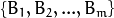, whose length equals the one of line.
If we indicate with 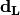 the direction of line, the orthogonal and clockwise direction to line 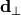 can be determined; these two directions, are used to construct a reference frame centered in the middle point of line. The gradients of pixels 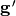 inside LSR can be projected to the newly determined frame, obtaining their local equivalent 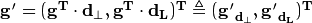.
Later on, a Gaussian function is applied to all LSR’s pixels along direction; first, we assign a global weighting coefficient 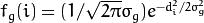 to i-th row in LSR, where 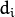 is the distance of i-th row from the center row in LSR, 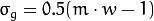 and 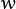 is the width of bands (the same for every band). Secondly, considering a band 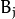 and its neighbor bands 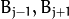, we assign a local weighting 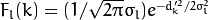, where 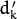 is the distance of k-th row from the center row in and 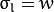. Using the global and local weights, we obtain, at the same time, the reduction of role played by gradients far from line and of boundary effect, respectively.
Each band in LSR has an associated band descriptor(BD) which is computed considering previous and next band (top and bottom bands are ignored when computing descriptor for first and last band). Once each band has been assignen its BD, the LBD descriptor of line is simply given by
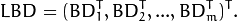
To compute a band descriptor , each k-th row in it is considered and the gradients in such row are accumulated:
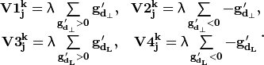
with 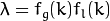.
By stacking previous results, we obtain the band description matrix (BDM)
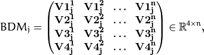
with  the number of rows in band :
the number of rows in band :
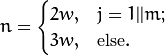
Each 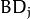 can be obtained using the standard deviation vector 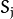 and mean vector 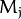 of 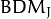. Thus, finally:
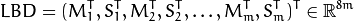
Once the LBD has been obtained, it must be converted into a binary form. For such purpose, we consider 32 possible pairs of BD inside it; each couple of BD is compared bit by bit and comparison generates an 8 bit string. Concatenating 32 comparison strings, we get the 256-bit final binary representation of a single LBD.
| [LBD] | Zhang, Lilian, and Reinhard Koch. An efficient and robust line segment matching approach based on LBD descriptor and pairwise geometric consistency, Journal of Visual Communication and Image Representation 24.7 (2013): 794-805. |
| [EDL] | Von Gioi, R. Grompone, et al. LSD: A fast line segment detector with a false detection control, IEEE Transactions on Pattern Analysis and Machine Intelligence 32.4 (2010): 722-732. |